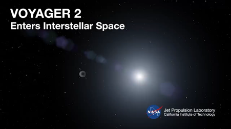

Ημερομηνία: 11 Δεκεμβρίου 2018
Συντάκτης:
Για δεύτερη φορά στη διαστημική ιστορία, ένα ανθρώπινο κατασκεύασμα, το σκάφος Voyager 2 της Αμερικανικής Διαστημικής Υπηρεσίας εισήλθε στον διαστρικό χώρο, που βρίσκεται ανάμεσα στα άστρα. Είχε προηγηθεί το δίδυμο σκάφος Voyager 1 το 2012.
Η NASA ανακοίνωσε ότι το Voyager 2 βγήκε από την ηλιόσφαιρα, την προστατευτική γιγάντια «φυσαλίδα» σωματιδίων και μαγνητικών πεδίων που δημιουργεί ο Ήλιος γύρω από το ηλιακό μας σύστημα. Η NASA εκτιμά ότι η διάσχιση του συνόρου, της λεγόμενης ηλιόπαυσης, συνέβη στις 5 Νοεμβρίου φέτος.
Το Voyager 2 απέχει τώρα λίγο περισσότερα από 18 δισεκατομμύρια χιλιόμετρα από τη Γη, παρόλα αυτά οι υπεύθυνοι της αποστολής μπορούν ακόμη να επικοινωνήσουν μαζί του. Όμως οι πληροφορίες χρειάζονται περίπου 16,5 ώρες για να ταξιδέψουν από το σκάφος στη Γη.
Το Voyager 2 είχε εκτοξευθεί το 1977, μόνο 16 μέρες μετά την εκτόξευση του Voyager 1. Αρχικά είχε σχεδιασθεί να ταξιδέψει για πέντε χρόνια και να μελετήσει τον Δία και τον Κρόνο, αλλά στην πορεία έφθασε μακρύτερα από κάθε προσδοκία. Η αποστολή του, που έχει διαρκέσει 41 χρόνια, είναι η μακρύτερη στην ιστορία της NASA.
Πηγή: ΑΠΕ-ΜΠΕ
Πηγή: www.enikos.gr